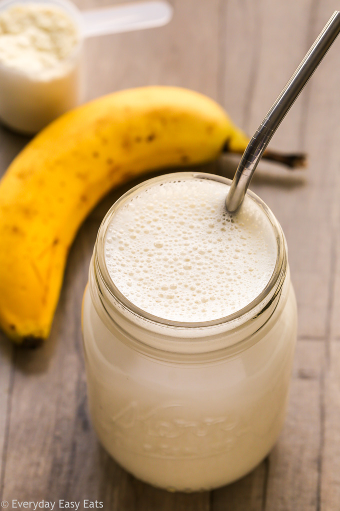

Chocolate Whey Too Many Gains

Description
This frosty, protein-filled shake is sure to satisfy your muscles and taste buds. It’s the ideal post-workout meal but can be enjoyed as a rich dessert all the same.
Warning: You will never want to go to Shake Shack ever again!
Ingredients
- 2% Milk
- 0% Fat Greek Yogurt
- Natural Peanut Butter
- Ripe Banana
- Chocolate Whey Protein Powder
- Ice Cubes
Steps
- Add 4oz milk into blender
- Add 1/2 cup greek yogurt into milk
- With your favourite spoon, add one spoonful peanut butter into the wet mix (I won’t tell anyone how much you use
- Insert half banana. Put the other half into the wet mix
- Add two scoops whey protein
- Add 7 ice cubes
- Blend for 30 seconds
Voila! Upon drinking this, you will look and feel like The Incredible Hulk.